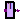
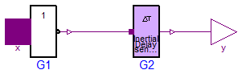

For all models in this package an FMU must be generated
Extends from Modelica.Icons.Package (Icon for standard packages).
| Name | Description |
|---|---|
|  InvGate1 | |
| InvGate2 |

Extends from Modelica.Electrical.Digital.Gates.InvGate (InvGate with 1 input value, composed by Not and sensitive intertial delay).
| Type | Name | Default | Description |
|---|---|---|---|
| Time | tLH | 0.1 | Rise inertial delay [s] |
| Time | tHL | 0.1 | Fall inertial delay [s] |
| Logic | y0 | L.'U' | Initial value of output |
| Type | Name | Description |
|---|---|---|
| input DigitalInput | x | Connector of Digital input signal |
| output DigitalOutput | y | Connector of Digital output signal |
Extends from Modelica.Electrical.Digital.Gates.InvGate (InvGate with 1 input value, composed by Not and sensitive intertial delay).
| Type | Name | Default | Description |
|---|---|---|---|
| Time | tLH | 0.1 | Rise inertial delay [s] |
| Time | tHL | 0.1 | Fall inertial delay [s] |
| Logic | y0 | L.'U' | Initial value of output |
| Type | Name | Description |
|---|---|---|
| input DigitalInput | x | Connector of Digital input signal |
| output DigitalOutput | y | Connector of Digital output signal |